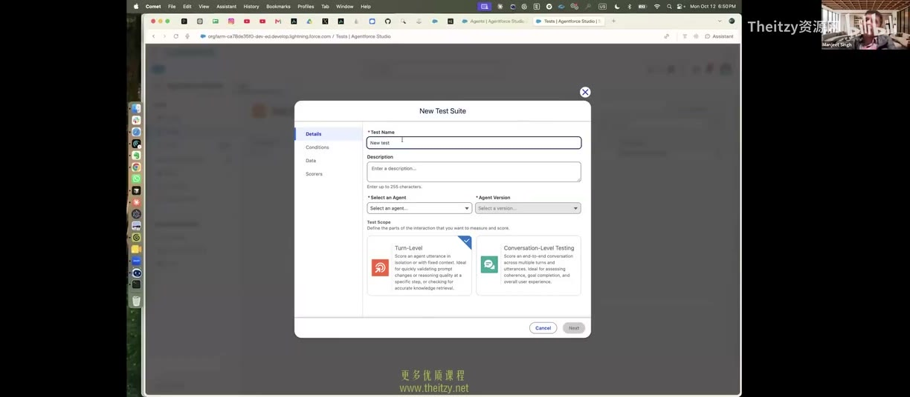

Chapter 05 · P2 21:00–59:00
工具全景：平台选型与工作流
讲师在 40 分钟里打开了 Braintrust、CrewAI、LangSmith、Agentforce 四个产品。结论出乎意料地朴素："80% of it is the same concept." 学会概念，任何工具五分钟上手；不学概念，换十次工具也做不出评估。
5.1UI 与 SDK：两条腿走路
UI —— 看与标
"UI is mostly used for running small unit tests, or more importantly, looking at the results. This is where you read them, look at dashboards, do labeling work."（P2 22:49）
SDK —— 规模化跑
"When we think about building evals and really running them at scale, we want to automate that process."（P2 21:59）Braintrust 用 braintrust eval，LangSmith 用 evaluate——"pretty much the same"。
5.2四个产品，一台演示车
| 平台 | 现场演示了什么 | 记忆点 |
|---|---|---|
| Braintrust | Logs / 多轮会话面板 / playground / dataset 导入（CSV 自动映射）/ 自定义 scorer / experiments | 课程主用平台；SK_ key 两行代码接入；为学员争取 $10–20 credits |
| LangSmith | 与 Braintrust 对等的概念映射（dataset / experiment / evaluator） | "if you want to use LangSmith, then evaluate"——API 层几乎同构 |
| CrewAI（Crew Studio） | Agent builder UI：拖拽式建 Agent 并自动产生 traces | Agent 运行平台 ≠ Eval 平台；可以把日志导给 Braintrust/LangSmith |
| Agentforce | 用模板 15 秒建成客服 Agent → Preview 看 trace → Batch Test 向导：选测试对象/单轮或会话级/合成数据（按 jobs-to-be-done）/选指标（conciseness、custom score、RAG 用 faithfulness） | 最完整的"评估向导"范式：测试 rubric = 对象 + 数据 + 指标 + 场景集 |

5.3术语映射表：别被命名骗了
讲师的原话："They might label this something else… oh, this maps to metrics, they're calling it score. Don't get confused by metrics and scores."（P2 58:38）
| 本课概念 | 常见别名 | 本质 |
|---|---|---|
| Dataset | Test set / 场景集 / scenario set | 带期望行为的输入集合，可版本化 |
| Metric / Scorer | Score、Evaluator、Grader | 把一条输出映射成一个分或 pass/fail 的函数 |
| Experiment | Batch test、Regression run、Eval job | Dataset × Scorer × 被测对象 的一次完整执行 |
| Playground | Prompt IDE（基本统一叫法） | 单条输入的人机对练台，可 A/B 多模型 |
| Trace / Span | Log、Run、观察记录 | 一次执行的完整过程记录与其子步骤 |
| Ship gate | Release criteria、Quality gate | 用评估结果做"发不发版"的判定规则 |
5.4工程细节与治理
数据与成本
- 合成数据可用但别依赖："You can also generate this data synthetically. It will not be of high quality… don't just rely on that."（P2 50:39）
- LLM 成本自付：平台只给"评估 harness"（数据集、评委、仪表盘）；LLM 费用自己出——企业批量买 credits，或自托管小模型（本地 Ollama 20 条用例要 10–20 分钟）。
- 夜间批跑：讲师团队把部分实验放在 12–3 a.m.，"因为资源空闲、跑得更快，早上一来就有结果"（P2 57:43）。
权限治理：projects 不只是文件夹
多团队共用一个平台时，用 project 隔离 trace："If you build an HR agent, you should be very careful about who can see those logs."（P2 35:09）——敏感日志的可见性在 HR/财务场景是硬需求，评估平台选型时要把它列为评审项。
让 AI 帮你接 AI 工具
对接平台的成本被大幅压缩了："You can literally ask your agent: hey, I want to connect to Braintrust, help me out. And it will walk you through step by step."（P2 32:37）——把报错完整丢给编码助手是讲师的标准调试姿势。